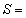
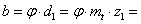
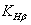

Провера степена сигурности против лома зубаца
Разарање у подножју зупца (лом) је неповољније од разрања бокова зупца, па је потребно проверити степен сигурности против лома зубаца како следи:
4.134
 1.6 до 2.4 препоручене вредности!
где смо претходно израчунали следеће величине:
2 - стр.138. M.E.II, усвојена вредност!
Трајна динамичка издржљивост подножја зубаца за једносмерну промену напона (према табели Т 4.5 М.Е II за Č.1220):

416  - према Т 4.5 М.Е II за Č.1220,
- према Т 4.5 М.Е II за Č.1220,
Напон у подножју зубаца цилиндричних зупчаника:
201.269
на основу вредности израза:  25.288 и
25.288 и  0.4, одређујемо следеће величине:
0.4, одређујемо следеће величине:
Фактор облика зубаца, одређујмо из Т 4.8 М.Е.II. за: 2.265
Фактор концентрације напона, одређујемо са Сл. 4.54 М.Е.II: 1.985
Фактор положаја одређујемо на основу израза:
0.720
степен спрезања профила
одређујемо у завршном прорачуну: 1.594
1.594
Утицај облика косозубих зупчаника: 0.982
степен спрезања бочних линија
одређујемо у завршном прорачуну: 0.422
0.422
Фактор расподеле оптерћења:
 1.030
1.030
где експонент
рачунамо на основу израза:  0.852
0.852
Ширина зубаца зупчаника:
 75.28649 - тј. усвајамо ширину спрезања: 76 
Висину зубаца зупчаника рачунамо по једначини:
погонског зупчанка: 11.504
гоњеног зупчанка: 11.269
Рачунамо вредности следећих величина: , и усвајамо
минималану
вредност од израчунатих tj. 
Меродавна за
прорачун је вредност: 6.607
Обимна сила:
17395.124 
Напомена : фактори за фино штеловање (подешавање) тачности резултата са жељеним бројем децимала су:  (претходни прорачун), и .